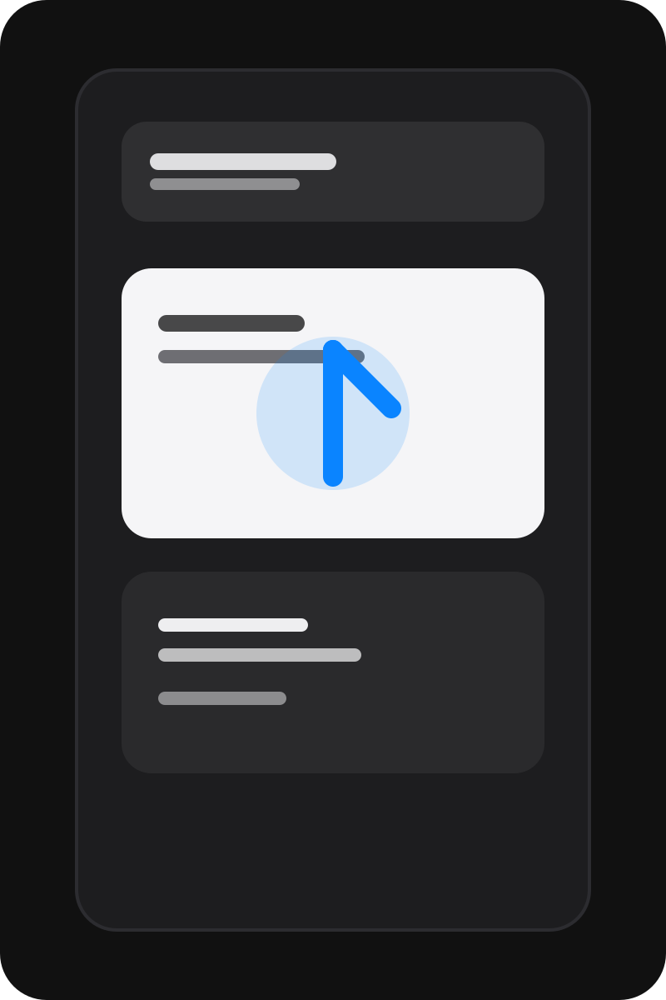
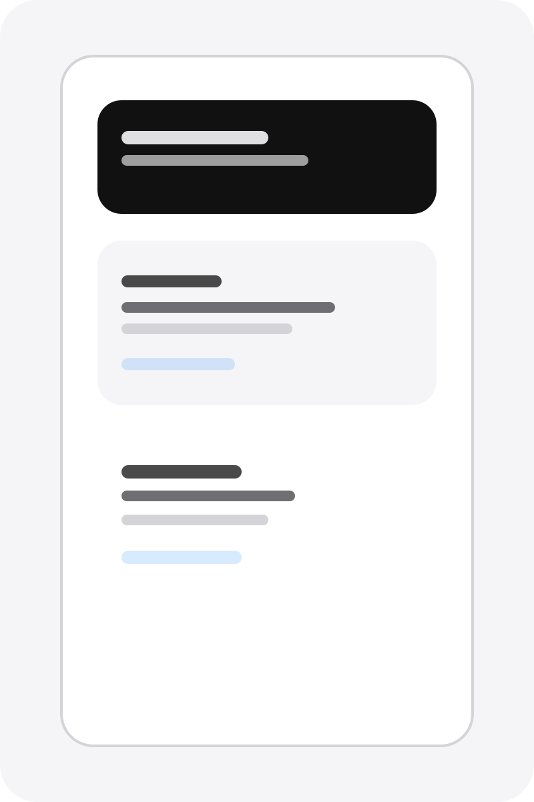

Quiet interface
Nothing unnecessary. Just the timer, the result and the next step.
Yolk Timer
Yolk Timer is a simple iOS app for keeping egg cooking clear and dependable, whether you want a soft set or something firmer.


Nothing unnecessary. Just the timer, the result and the next step.
Use a simple countdown and keep your cooking process clear from beginning to end.
Pick the doneness that suits you and trust the app to support the experience.
No account is required and no personal data is collected.
Yolk Timer is available as a simple, private app for iPhone. More details and release information will be shared here when available.
Back to homepage →